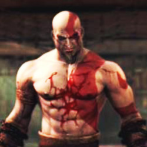

Forums galactiques > Assemblée Galactique : diplomatie officielle > Objectifs du Gouvernement
| Vecna Respect diplomatique : 423  22/05 ETU 20:00  | Score : -1 Détails je ne vois pas ce qu'on a de tyrannique , il faut se calmer mes preux chevaliers, tous ce que vous allez faire c'est causer la mort de milliers d'innocents pourquoi ?
pour rien ... escusez moi nous souhaitons juste instaurer une diplomatie ! soyer réalistes et cessez vos mascarades et jalousies ! | ||
| Macastril Respect diplomatique : 773  22/05 ETU 20:10 | Score : 1 Détails
"Allez, imaginons que j'y croie. Je m'attends naturellement à ce que vous vous expliquiez sur la prise de Newdeun par la force. J'imagine que, comme tout bon tyran grec de la préhistoire terrienne, vous n'avez pris ce pouvoir que pour mieux le restituer au peuple le moment venu, à l'issue d'élections honnêtes et démocratiques. On se la joue Pisistrate? Macastril se gratta une fesse, tout en regardant pensivement la loge de des coalisés d'Arès. "Me voilà rassuré. Moi qui craignais l'instauration d'une bureaucratie oligarchique... sommes-nous mauvaises langues. | ||
| Al-Kashi Respect diplomatique : 389  22/05 ETU 20:13 | Score : 0 Détails Ah parce qu'un gouvernement est en place ?
Je ne vois actuellement rien qui laisse du pouvoir à certains, ils n'ont aucune force d'imposition, un gouvernement se doit d'etre fort ! Où est l'Armée, comment se fait-il que nous puissions encore discuter de ce pseudo gouvernement sans qu'il n'y ai aucune réaction ? Si ce gouvernement est réellement présent qu'il le fasse savoir, avant que j'entreprenne des fouilles sur le système 0. | ||
| Vecna Respect diplomatique : 423 22/05 ETU 20:18 | Score : -2 Détails si vous tous puissant , pourquoi n'avez vous pas pris newdeun ?
je ne suis pas assez puissant pour prendre newdeun , mais arés si , il est le plus fort de la galaxie pour le moment sans contestation ... bien sur , la lachetée apparaîtra si vous attaquez a 100 contre 10 ... Et laissez nous le temps d'organiser le gouvernement provisoire ... | ||
| Oris Respect diplomatique : 6  22/05 ETU 20:20 | Score : 0 Détails commandant vecna
vous dite que vous voulait instaurait une diplomatie mais je vien de recevoir un rapport qui disait que vous aviez attaqué sans raisons un commandant dans votre système. Est-ce exact ? | ||
| Vecna Respect diplomatique : 423 22/05 ETU 20:22 | Score : -1 Détails A si vous parlez de mon chères voisin .... on ne provoque pas le loup qui dort désolée , lorsqu'on m'envoie balader lorsque je m'escuse et qu'on me demande une somme colossale je n'apprécie pas particuliérement ... mais discutons de cela en mp ce n'est pas le sujet
| ||
| Lamouette Respect diplomatique : 96  22/05 ETU 20:23 | Score : 0 Détails *FLASH, une mouette apparut dans un hologramme*
Tout cela est fort bien dit, mais le principal acteur de toutes ces contestations ne s'est toujours pas exprimé, j'espère qu'il a préparé un long discours clair et bien construit pour calmer les esprits. Le (quasi) signe de vie qu'il nous donne pour l'instant et son seul acte en tant que président est un impot exhorbitant, pour des commandants en voie de dévelloppement. S'il veut récupérer sa crédibilité, je le conseille de parler et vite, car certains sont de caractère plus impulsif et moins patient que moi. *FLASH* | ||
| Néo Dracula Respect diplomatique : 201  22/05 ETU 20:27 | Score : 0 Détails Entendant la discussion de Vecna et d'Oris,Néo Dracula se permit:
"silence!là n'est pas le sujet messieurs..." Puis il continua à écouter l'assemblée,il attendait impatiemment une intervention de ce certain Arés... | ||
| Perlelune Respect diplomatique : 299  23/05 ETU 08:44 | Score : 1 Détails "Arés? le plus fort de la galaxie?"
La commandante en armure fut prise d'un fou rire incontrolable. Quand celui ci se calma, elle reprit: " un despote sans armée est un homme mort, un despote qui ne se fait pas craindre du peuple est un homme mort, et un despote malveillant est un homme mort à long terme. Vive le despotisme bienveillant, mais au moins, faites cela sérieusement". Son rire recommenca à fuser. | ||
| le renard Respect diplomatique : -20  23/05 ETU 12:43 | Score : 0 Détails un renard s'avança et pris la parole :
"Je pense que arés même avec sa planète n'a aucun contrôle sur nous et n'a point de force . De plus une planète gouvernement ne sers a rien a par essayer de nous faire payer des impôts comme la démontré l'ancienne zone ou nous vivions qui a disparut le gouvernement est juste symbolique car je pense que si personne ne l'attaque ou paye des impôts il ne sera la juste pour nous parlez pendant des heures et des éternités madame et monsieur bonsoir " le renard sortit de la salle | ||
| Largo Respect diplomatique : 152  23/05 ETU 12:49 | Score : 1 Détails Le Gouvernement doit être fort. Il doit être en mesure d'appliquer ses décisions et doit sauvegarder la paix. Il doit définir une ligne de conduite et des objectifs qu'il s'engage à tenir.
Or, pour l'instant que vois-je? Rien du tout. Cela me révolte. Voilà 3 jours que la conquète de Newdeun est effective. Commandant Arès, je vous en supplie, prononcez rapidement un discours afin de clarifier la situation. Sans quoi, comme je l'ai déjà dit, la Galaxie risque de s'embraser, et vous seul serez considéré comme responsable, vous seul en paierez les conséquences. | ||
| AMDUSCIAS Respect diplomatique : 38  23/05 ETU 13:03 | Score : 0 Détails Je vous soutiens dans votre point de vue commandant Largo,
nous sommes en présence d'un gouvernement que l'on pourrait juger de fantôme. | ||
| le renard Respect diplomatique : -20 23/05 ETU 13:10 | Score : 1 Détails on ne peut pas le juger de fantôme ,il l'est tout simplement ce gouvernement .
| ||
| Joruun Khor Respect diplomatique : 17  23/05 ETU 13:25 | Score : 0 Détails "Trois jours déjà?", demandais-je à mon voisin de siège, qui apparement était plus intéressé à dormir qu'à participer au débat. Je me levais et allais prendre la parole à mon tour, au passage je mis une tape amicale sur l'épaule du Commandant AMDUSCIAS!
"Commandant, Je sens s'étendre dans la Galaxie renaissante un climat de peur et d'angoisse, et à juste titre, orchestré par la non-révélation des intentions du Gouvernement. Comme l'a si bien fait remarquer le Commandant LARGO, celà fait trois jours que NEWDEUN a été prise par le commandant ARES et toujours aucune parole... Au début je pensais qu'il fallait faire confiance et attendre de voir comment tout ce déroulerait, mais le temps passe et rien ne bouge, et l'angoisse d'un premier vrai conflit galactique commence à naitre!... Encore une fois, les paroles du Commandant LARGO sont justes, la Galaxie risque à tout moment de s'embraser si le silence continu, et je trouve qu'elle n'en a pas besoin en ces temps, pas après une renaissance aussi récente!" | ||
| Ariétan Respect diplomatique : 102  23/05 ETU 13:41 | Score : 2 Détails Commandants et commandantes, désolé d'arriver en retard j'ai été victime de quelques soucis techniques.
Je ne suis point d'accord sur la notion de Gouvernement, un Gouvernement est un groupe de personne, à l'heure actuelle il n'y a que le commandant Arès qui dispose de Newdeum, je trouve illogique de parler de Gouvernement. En revanche, parler d'un commandant qui s'en est pris à la capitale Galactique et qui ne donne plus de signe de vie, laissant toutes intentions pensable, là je suis entièrement d'accord. Bien respectueusement Ariétan | ||
| Perlelune Respect diplomatique : 299 23/05 ETU 15:21 | Score : 0 Détails Commandeur Ariétan, ne parlez pas sans connaitre la situation je vous prie. Il est établi que le pseudo-gouvernement actuel n'est pas Arès, mais Arès et sa coalition.
| ||
| Ariétan Respect diplomatique : 102 23/05 ETU 15:24 | Score : 1 Détails Mes plus plates excuses Commandante.
Respectueusement Ariétan | ||
| Revan82 Respect diplomatique : 545  23/05 ETU 15:37 | Score : 1 Détails Le commandant Revan se leva, se plaça derriere le pupitre et prit la parole :
Commandants, après avoir attentivement écouté toutes vos déclarations et avoir constaté que malgré tous les appels de justifications, le commandant Arès n'a toujours pas donné signe de vie. Voilà pourquoi je me pose cette question : Serait il en train de préparer quelque chose? Je pense que ce qu'a dit le commandant Macastril est tout à fait cohérent, et nécessite une vigilence accrue sur ses futurs agissements. En l'occurrence, je privilegie la diplomatie, mais accompagné d'un ultimatum assez court à son encontre!! Merci de m'avoir écouté!! Le commandant partit se rasseoir!!! | ||
| Perlelune Respect diplomatique : 299 23/05 ETU 15:37 | Score : 0 Détails Il n'y à pas de probléme, mais veillez à suivre les débats.
| ||
| Siklariis Respect diplomatique : 99  23/05 ETU 17:19 | Score : 2 Détails Commandants,
Devant le mutisme d'Arès et les nombreux doutes qui planent sur lui il faut éclaircir la situation. Si ce n'est pas lui qui le fait, alors certains trouveront un moyen de stabiliser la situation. Il ne semble pas etre un tyran, cependant le silence cache bien des choses. Newdeun doit etre confiée à un gouvernement en mesure d'appliquer des valeurs que la majorité accepte, or Arès -bien qu'actif- reste dans son coin. Il n'a aucune raison de garder Newdeun pour y passer des vacances. Laissons lui encore une semaine pour qu'il organise les éléctions comme il l'a dit lui même. Après quoi s'il ne fait rien des mouvements s'organiseront (je pense par exemple aux Libertadores) a condition que ces derniers expriment une politique neutre visant à préparer de réelles éléctions. Merci de m'avoir écouté ; Siklariis Tahl. |
Forums galactiques > Assemblée Galactique : diplomatie officielle > Objectifs du Gouvernement